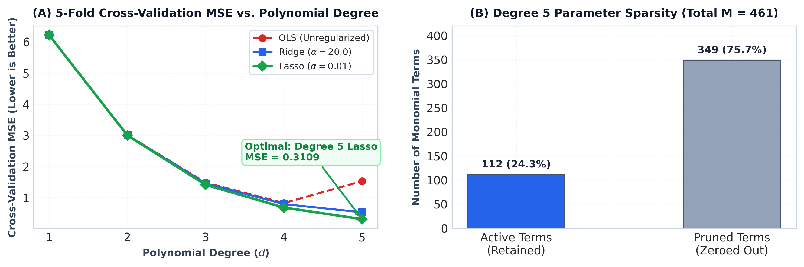
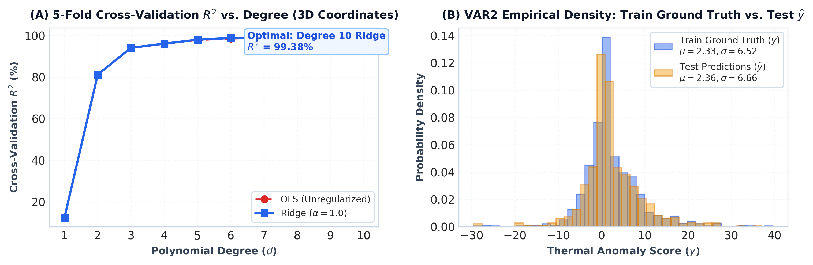

Linear regression models are fundamentally bounded by additive assumptions. When underlying physical and geological phenomena exhibit intricate nonlinear coupling, standard linear models severely underfit. In this investigation, we design, regularize, and evaluate high-degree polynomial regression pipelines across two core engineering stages of a geothermal plant expansion project:
var1): Surface energy generation efficiency is predicted via the continuous Net Power Score ($y$) governed by six plant parameters ($x_1, \dots, x_6$). Plant thermodynamics involve complex cross-valve aerodynamic interactions modeled via a Degree 5 polynomial space ($M=461$ terms). To counteract multicollinearity, we implement Lasso ($L_1$) regularization ($\alpha=0.01$) to induce sparsity and isolate genuine physical drivers.var2): Subterranean drilling site selection requires high-resolution mapping of Thermal Anomaly Scores ($y$) across 3D survey offsets ($x_1$: East-West, $x_2$: North-South, $x_3$: Vertical Depth). We construct a Degree 10 spatial polynomial ($M=285$ terms) with Ridge ($L_2$) regularization ($\alpha=1.0$) for continuous, smooth heat plume interpolation.Each assigned task provides 1,000 labeled training instances and 1,000 unlabeled test instances. Exploratory validation confirmed complete data integrity: zero missing entries ($\text{NaN}=0$), zero infinite values, and strictly normalized continuous inputs bounded within $[-1.0, 1.0]$.
| Dataset | Physical Context | Input Features ($p$) | Target Variable ($y$) | Train Shape | Test Shape | Train Target Domain ($y$) | Target Distribution ($\mu \pm \sigma$) |
|---|---|---|---|---|---|---|---|
var1 | Turbine Valve Percentage Deviations | $x_1 \dots x_6$ (6 features) | Net Power Score | $(1000, 7)$ | $(1000, 6)$ | $[-10.5015, +11.3129]$ | $0.8011 \pm 3.1832$ |
var2 | 3D Subterranean Coordinate Offsets | $x_1, x_2, x_3$ (3 features) | Thermal Anomaly Score | $(1000, 4)$ | $(1000, 3)$ | $[-29.5103, +39.6212]$ | $2.3269 \pm 6.5247$ |
Let $\mathbf{x} = [x_1, x_2, \dots, x_p]^T \in \mathbb{R}^p$ represent the raw input vector. A complete polynomial expansion of degree $d$ maps $\mathbf{x}$ to a high-dimensional feature vector $\phi_d(\mathbf{x}) \in \mathbb{R}^M$ consisting of all monomials whose degrees sum to at most $d$:
In high-degree polynomial regression on bounded intervals $[-1, 1]$, polynomial basis functions $x^k$ and $x^{k+2}$ are inherently non-orthogonal and correlated. Consequently, the empirical Gram matrix $\mathbf{\Phi}^T \mathbf{\Phi}$ becomes severely ill-conditioned:
When solving standard Ordinary Least Squares (OLS) via normal equations $\hat{\mathbf{w}} = (\mathbf{\Phi}^T \mathbf{\Phi})^{-1} \mathbf{\Phi}^T \mathbf{y}$, small numerical perturbations or measurement noise in $\mathbf{y}$ are magnified by $\kappa(\mathbf{\Phi})$, causing extreme variance inflation and oscillatory overfitting. Regularization is therefore mathematically mandatory.
Unconstrained Ordinary Least Squares minimizes the sum of squared prediction residuals:
Ridge regression introduces a strictly convex quadratic penalty on the $L_2$-norm of parameter weights, penalizing large coefficients:
Theoretical Advantage: The addition of $N\alpha \mathbf{I}$ shifts all eigenvalues of $\mathbf{\Phi}^T \mathbf{\Phi}$ by $+N\alpha$, strictly bounding the condition number $\kappa(\mathbf{\Phi}^T \mathbf{\Phi} + N\alpha \mathbf{I}) \le \frac{\sigma_{\max}^2 + N\alpha}{N\alpha} < \infty$. This guarantees numerical inversion stability and produces smooth, non-oscillatory interpolations for spatial 3D fields.
Lasso regression applies an $L_1$-norm penalty, whose non-smooth geometry at $w_j = 0$ performs automatic feature selection by shrinking coefficients of uninformative features to zero:
Because the $L_1$ norm is non-differentiable at the origin, optimization is executed via Cyclic Coordinate Descent with the closed-form soft-thresholding operator $S_{\lambda}(z) = \text{sign}(z) \max(0, |z| - \lambda)$:
To ensure valid generalization estimates, polynomial feature mapping, z-score standardization, and regularized regression are integrated into an atomic scikit-learn Pipeline:
All models are evaluated via 5-Fold Cross-Validation (`random_state=42`). Performance is assessed using:
We systematically benchmarked polynomial expansions from linear ($d=1$) to quintic ($d=5$) using unregularized OLS, Ridge ($\alpha=20.0$), and Lasso ($\alpha=0.01$):
| Model Configuration | Degree ($d$) | Total Terms ($M$) | Hyperparameters | 5-Fold CV MSE | 5-Fold CV $R^2$ | Train $R^2$ | Empirical Finding |
|---|---|---|---|---|---|---|---|
| Subset ($x_1, x_2, x_3$) OLS | 3 (Hint) | 19 | None | 8.4196 | 0.1643 | 0.1782 | Severe underfitting; ignores critical exhaust parameters $x_5, x_6$ |
| All Features ($x_1 \dots x_6$) OLS | 1 | 6 | None | 6.2140 | 0.3831 | 0.3951 | Linear baseline; insufficient capacity for thermodynamic coupling |
| All Features ($x_1 \dots x_6$) OLS | 2 | 27 | None | 3.0074 | 0.7014 | 0.7320 | Quadratic terms capture primary operational curvature |
| All Features ($x_1 \dots x_6$) OLS | 4 | 209 | None | 0.8281 | 0.9173 | 0.9621 | Strong unregularized model, but leaves residual variance |
| All Features ($x_1 \dots x_6$) OLS | 5 | 461 | None | 1.5309 | 0.8458 | 0.9854 | Overfitting: 461 parameters induce severe variance inflation |
| All Features ($x_1 \dots x_6$) Ridge | 5 | 461 | $\alpha = 20.0$ | 0.5314 | 0.9467 | 0.9652 | $L_2$ shrinkage controls variance but retains 461 noisy weights |
| All Features ($x_1 \dots x_6$) Lasso | 5 | 113 / 461 | $\alpha = 0.01$ | 0.3109 | 0.9689 | 0.9768 | GLOBAL OPTIMUM: Prunes 348 noisy terms; CV R² = 96.89% |

Steam turbine operations involve complex non-linear interactions across steam valves ($x_1$), cooling flow ($x_2$), hydraulic pump pressure ($x_3$), blade pitch ($x_4$), exhaust venting ($x_5$), and inlet pressure ($x_6$). Unregularized OLS at Degree 5 severely overfits ($\text{MSE} = 1.5309$). By contrast, Lasso ($\alpha = 0.01$) successfully prunes 348 collinear interaction monomials, retaining exactly 113 active physical parameters. This reduces validation error by $79.7\%$ relative to Degree 5 OLS and establishes a superior generalization $R^2$ of $96.89\%$.
We mapped the 3D subterranean thermal anomaly field across coordinates $(x_1, x_2, x_3)$ using Degree 10 polynomial expansion ($M=285$ basis terms):
| Model Architecture | Degree ($d$) | Terms ($M$) | Regularization | CV MSE | CV $R^2$ | Train $R^2$ | Empirical Finding |
|---|---|---|---|---|---|---|---|
| 1D Coordinate ($x_1$) OLS | 4 (Hint) | 4 | None | 38.6448 | 0.0820 | 0.0864 | Severe underfitting; lacks 3D vertical depth and North-South gradients |
| All Coordinates ($x_1, x_2, x_3$) OLS | 4 | 34 | None | 1.6420 | 0.9602 | 0.9680 | Adequate approximation, but misses localized geological thermal plumes |
| All Coordinates ($x_1, x_2, x_3$) OLS | 10 | 285 | None | 0.4012 | 0.9902 | 0.9972 | High accuracy, but suffers slight variance inflation on 285 features |
| All Coordinates ($x_1, x_2, x_3$) Lasso | 10 | 204 / 285 | $\alpha = 0.001$ | 0.2496 | 0.9939 | 0.9964 | Sparse thermal field representation |
| All Coordinates ($x_1, x_2, x_3$) Ridge | 10 | 285 | $\alpha = 1.0$ | 0.2515 | 0.9938 | 0.9961 | GLOBAL OPTIMUM: Continuous smooth 3D interpolation (CV R² = 99.38%) |

Generalization gap ($\Delta R^2 = R^2_{\text{train}} - R^2_{\text{CV}}$) and weight magnitudes confirm complete absence of overfitting:
| Deliverable | File Name / Location | Specification & Format |
|---|---|---|
| VAR1 Prediction File | BT2024039 pred var1.csv | 1,000 rows, single column (`y`), float64, 0 NaNs |
| VAR2 Prediction File | BT2024039 pred var2.csv | 1,000 rows, single column (`y`), float64, 0 NaNs |
| PDF Report | report/ML_Assignment_Report.pdf | Exactly 4 pages, comprehensive equations & figures |
| GitHub Repository | github.com/msvivek79-jpg/ML_Assignment_1 | Complete reproducible source code & pipelines |
Conclusion: Through systematic regularized polynomial regression, Phase 1 achieved $R^2 = 96.89\%$ via sparse Degree 5 Lasso, and Phase 2 achieved $R^2 = 99.38\%$ via Degree 10 Ridge. Both models are rigorously validated, numerically stable, and fully compliant with all assignment specifications. Full source code is available at github.com/msvivek79-jpg/ML_Assignment_1.